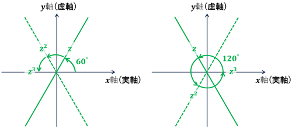

1.1 複素平面
例題1.3 解答
- ⅰ) 複素平面上の 3 点 \(z_1,z_2,z_3\) を頂点とする三角形 \(\triangle z_1z_2z_3\) の重心を表す点は \(\frac{1}{3}(z_1+z_2+z_3)\) であることを示せ。
・2次元空間上の3点 \((x_1,y_1),(x_2,y_2),(x_3,y_3)\) が作る三角形の重心の座標は
\[
\begin{align}
x_G~&= \frac{x_1+x_2+x_3}{3} \\
\\
y_G &= \frac{y_1+y_2+y_3}{3}
\end{align}
\]
だった。(求め方はこちら)
・これらを実部, 虚部とする複素数で表現すると
\[
\begin{align}
z_G &= x_G+iy_G = \frac{x_1+x_2+x_3}{3}+i\frac{y_1+y_2+y_2}{3} \\
\\
&= \left(\frac{x_1}{3}+i\frac{y_1}{3}\right)+\left(\frac{x_2}{3}+i\frac{y_2}{3}\right)+\left(\frac{x_3}{3}+i\frac{y_3}{3}\right) \\
\\
&= \frac{1}{3}\left((x_1+iy_1)+(x_2+iy_2)+(x_3+iy_3)\right)\\
\\
&=\frac{1}{3}(z_1+z_2+z_3)
\end{align}
\]
となる。
- ⅱ) \(|z_1-z_2|^2+|z_1+z_2|^2=2(|z_1|^2+|z_2|^2)\) を証明せよ。(三角形の中線定理)
・(うまいことは考えず, )そのまま計算する。
\[
\begin{align}
&|z_1-z_2|^2+|z_1+z_2|^2 \\
\\
&=(x_1-x_2)^2+(y_1-y_2)^2+(x_1+x_2)^2+(y_1+y_2)^2 \\
\\
&=x_1^2-\cancel{2x_1x_2}+x_2^2+y_1^2-\cancel{2y_1y_2}+y_2^2+x_1^2+\cancel{2x_1x_2}+x_2^2+y_1^2+\cancel{2y_1y_2}+y_2^2 \\
\\
&=2(x_1^2+y_1^2+x_2^2+y_2^2)=2(|z_1|^2+|z_2|^2)
\end{align}
\]
- ⅲ) \(z=x+iy (y\neq 0)\) のとき, \(z^3\) が実数となるための条件を求めよ。
\[
\begin{align}
z^3 &=(x+iy)^3=(x+iy)(x^2-y^2+i2xy) \\
\\
&=x^3-xy^2-2xy^2+i(x^2y-y^3+2x^2y)
\end{align}
\]
・\(Im(z^3)=y(3x^2-y^2)\)
・\(y\neq 0\) で \(Im(z^3)=0\) となる条件は \(y=\pm\sqrt{3}x\)
